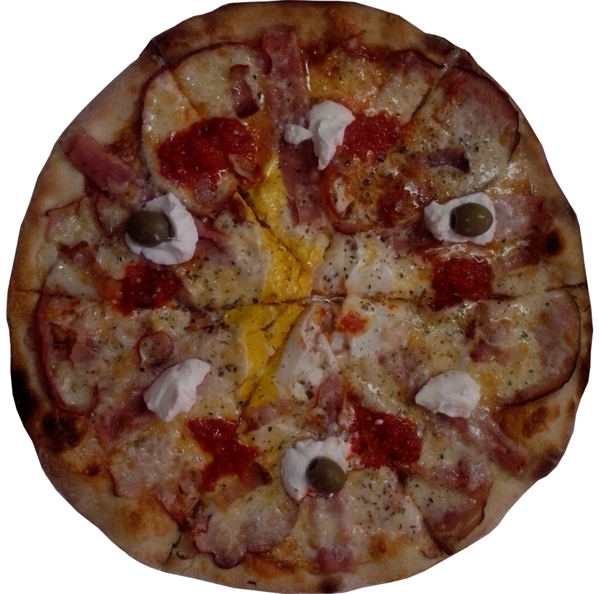
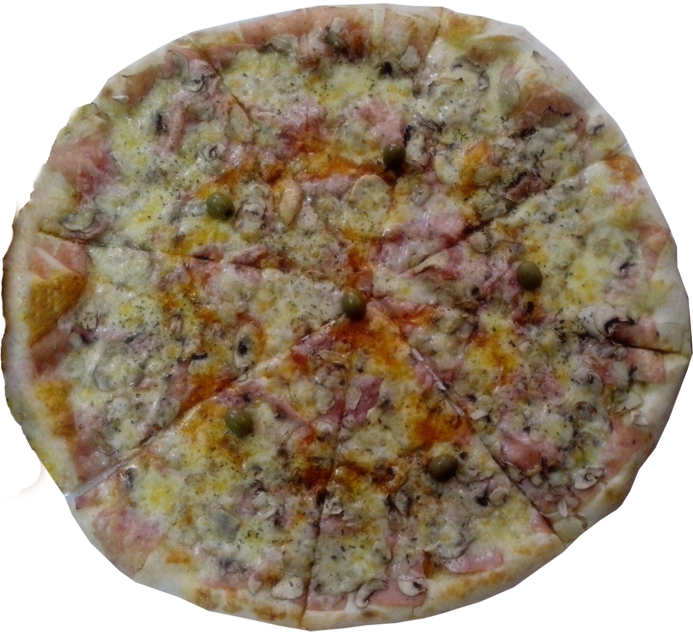

Pizzeria Di Marco
Italijanska hrana na srpski način
Pizzerija Di Marco postoji dugi niz
godina, od 2007. Kao renomirana picerija sa dugim postojanjem, možemo se
pohvaliti kvalitetom naših proizvoda i velikim brojem zadovoljnih konzumera naše hrane. Da li smo zaista dobri,
uverićete se nakon prvog zalogaja! O kvalitetu naših pica ne moramo mi govoriti, o tome pričaju oni koji su ih
probali.
Naši proizvodi su sveži i ukusni, o čemu se brine tim ljubaznih kuvarica. Trudimo se da
ispoštujemo Vaše zahteve, molbe, vreme isporuke.
U ponudi imamo veliki izbor pica,
špageta, sendviča, lazanja, salata, slanih i slatkih palačinki, pića. Ukoliko Vam je lakše, hranu možete poručiti
on-line ili pozivom brojeva telefona: 011/29-94-706 i 065/85-85-550
Vršimo besplatnu dostavu naše hrane
do Vaših domova!
~
Za sve naše verne kupce, spremili smo iznenađenje!
Za sve porudžbine preko 2000 dinara,
popust
10%
~
Radno vreme:
ponedeljak - nedelja, izuzev utorkom
od 14:00h do 24:00h